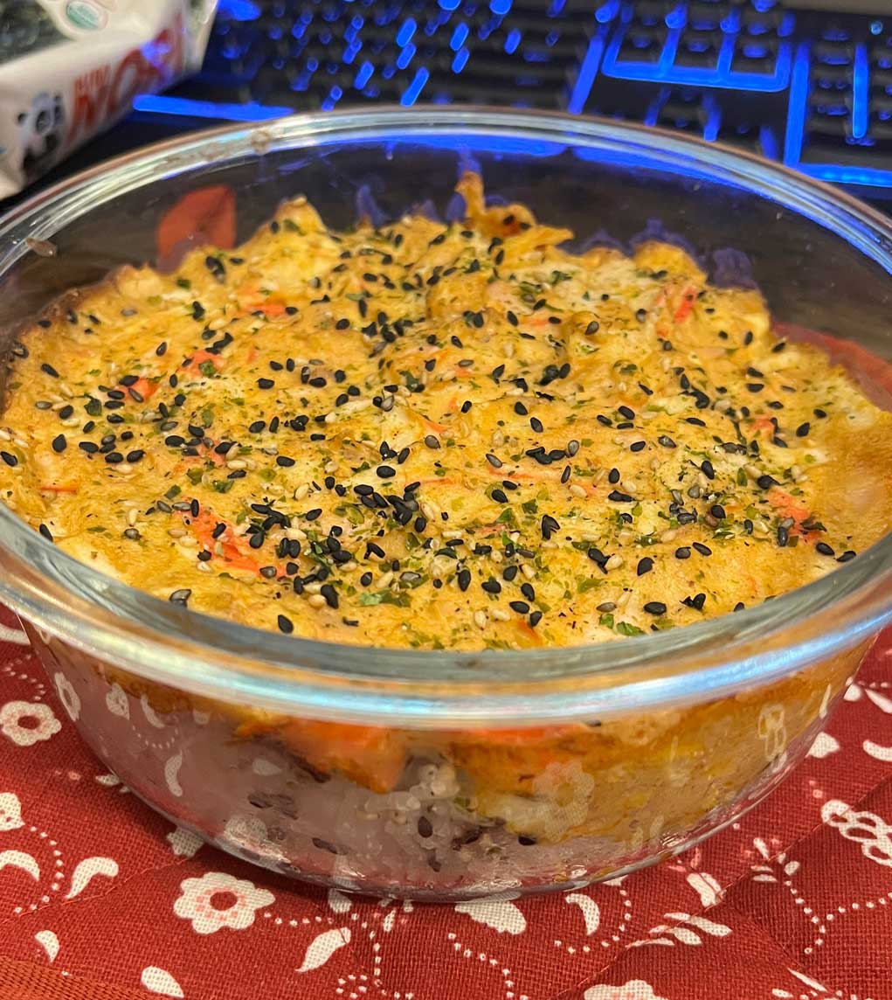

Sushi Bake
A fun and easy dish great as an appetizer or a mid-day snack! For those that love sushi but can’t go to an actual sushi place.

Ingredients:
- Cooked rice
- Cooked salmon or tuna (canned works!)
- Imitation crab
- Sushi nori
- Mayonnaise
- Sriracha
- Furikake seasoning
- Optional:
- Cooked shrimp
- Avocado
- Sesame oil
- Rice vinegar
Directions:
- Cook 1 cup of rice (1 cup per serving).
- If using salmon, cook in a pan and lightly season with salt and pepper.
- Cut up your imitation crab into small pieces.
- If using shrimp, cut into small pieces.
- Mix the salmon/tuna, imitation crab, shrimp, mayonnaise (about a tablespoon), and sriracha (to taste) in a bowl.
- In an oven-safe dish, place your cooked rice and mix in the furikake seasoning and about a teaspoon of rice vinegar and sesame oil (if you’d like!).
- Add a thin layer of nori on top of your rice.
- For the final layer, add in your seafood mixture.
- Drizzle some sriracha on top.
- Bake uncovered for about 15 minutes or until the top is golden. This dish can also be enjoyed cold! If you want to try it this way, place the dish into the refrigerator until cold instead of baking!
- Add the slices of avocado on top.
- Enjoy either by simply eating it out of the dish or scooping some into nori and eating it that way!
Table of Contents
Recipes